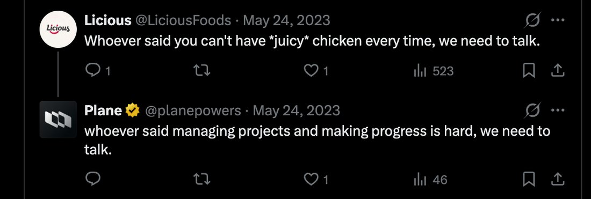
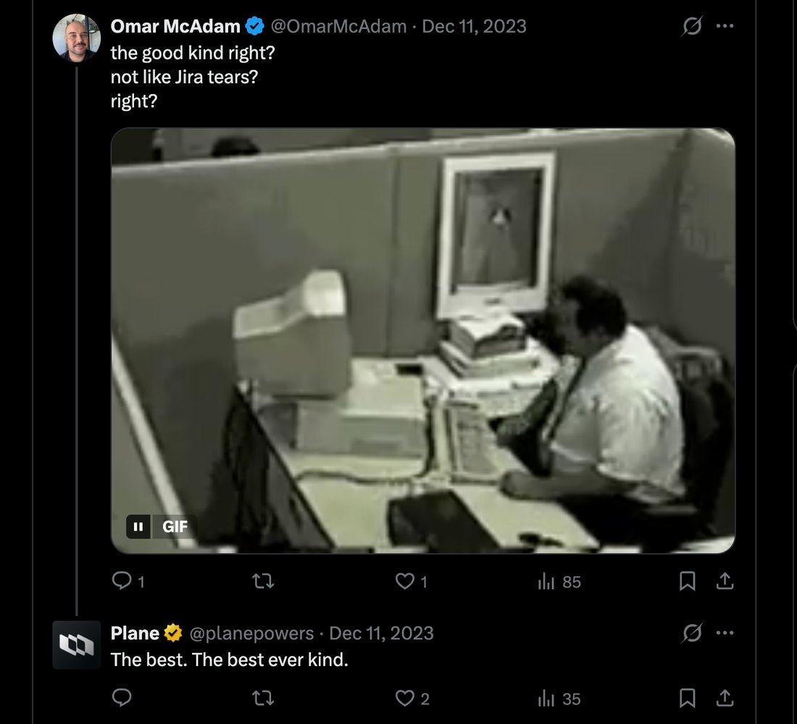
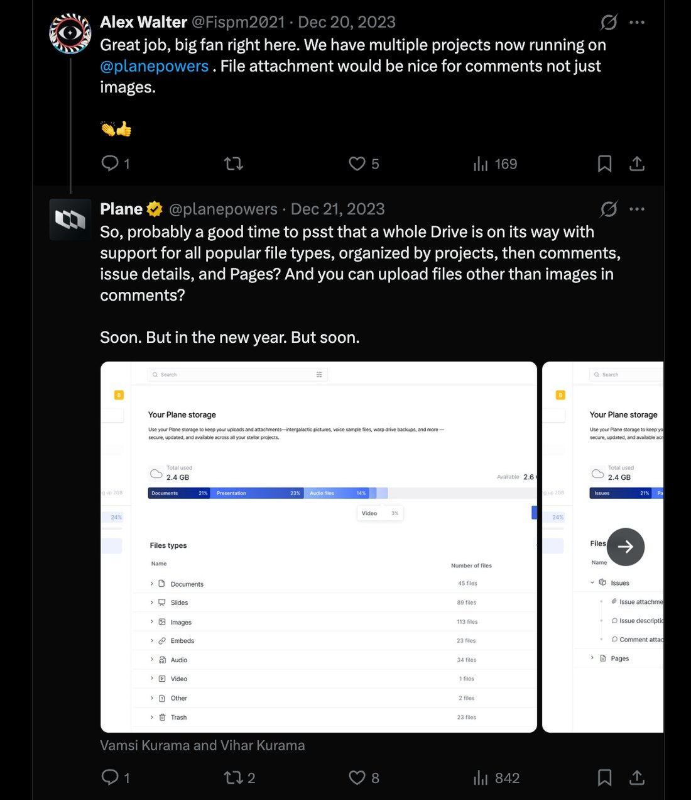
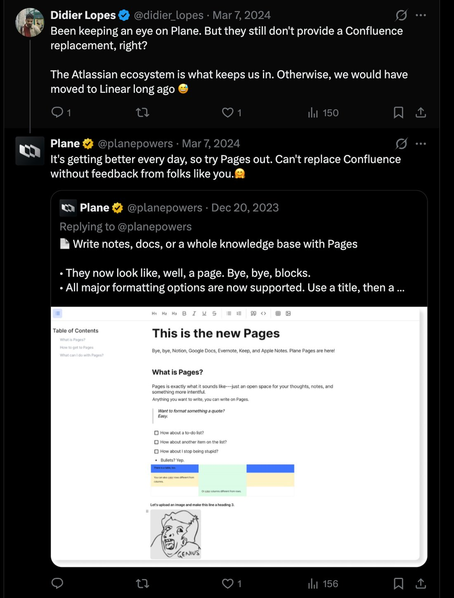
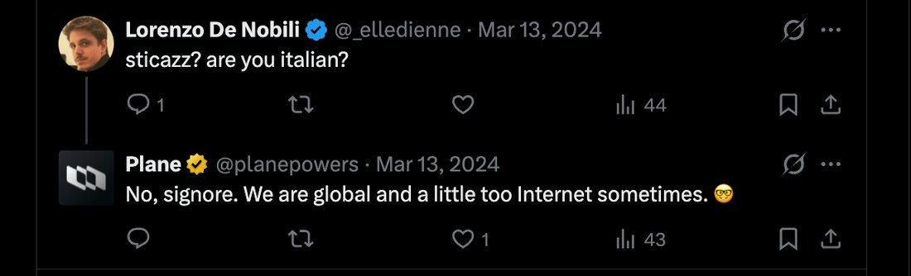

Start simple. With your product updates.
Every user cares about the product they use. That is where I began building Plane's Twitter. Good brands educate their users in their own way!
My co-founder taught me how much release notes matter in an open-core product. I added my Gen Z sass and started showing Plane's Twitter community what was new each week.
Why it worked
- Our views climbed with every update done well. We were reaching new people. Exactly what we wanted.
- Our Discord community was buzzing. People had started talking to each other and answering each other's queries. We didn't expect this, and we were so happy!
Nothing is a one-post activity. Talk about it over and over!
I thought Plane's Twitter was the best. Our customers did not agree with me.
From the pricing launch to our open-core events, everything worked when I told a story and kept bringing their attention back to what mattered.
For us, that was our community, at the centre of everything we did.
It won't matter if your audience can't understand it.
Plane was an open-source product, which is apparently a huge deal from a security point of view. I never got half the things I had to talk about.
But I quickly realised our customers were savvy and smart, and that meant talking to them in their language. Technical storytelling came to my rescue.
To have a village, you must be willing to be a villager.
I had so much fun building Plane's Twitter. Talking to its community was the best part.





What I learnt?
- 1
Consistency will beat creativity any time.
- 2
Experimenting with your audience is a more authentic story than any you can weave.